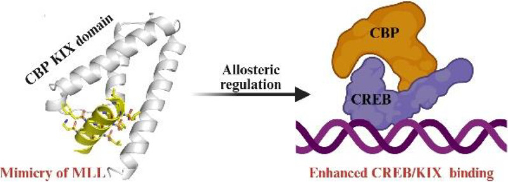
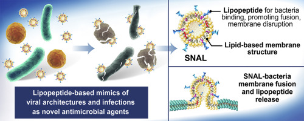
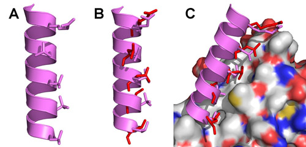
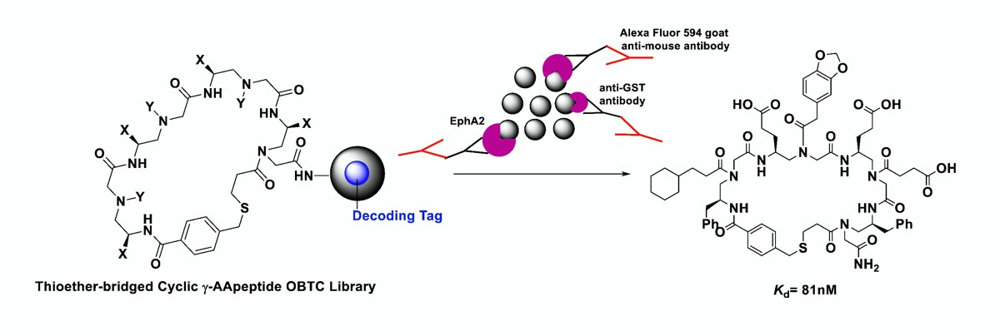
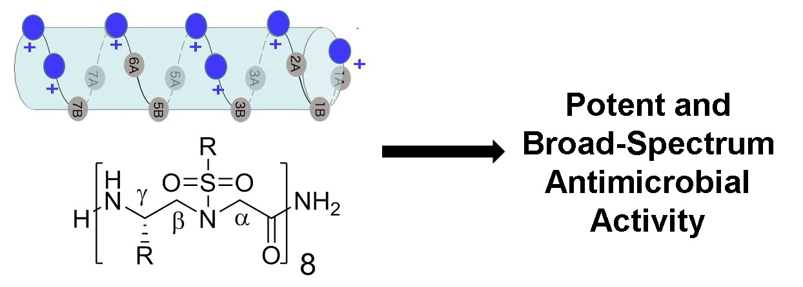

Publications
(*Corresponding author, +Equal contribution)
From Independent Career:
2025
219. Canjia Zhai, Chengkai Xu, Yunpeng Cui, Lukasz Wojtas, Jianfeng Cai, Wenqi Liu.* A Synthetic Lectin for Glucuronate. ACS Central Sci. 2025, ASAP.Link
218. Bo Huang,+ Emily Gregory-Lott,+ Bingbing X. Li,+ Timothy H. Tran, Sihao Li, Menglin Xue, Shaohui Wang, Anabanadam Asokan, Ning Shen, Xingming Sun, Chuanhai Cao, Xiangshu Xiao,* Gary Daughdrill,* Jianfeng Cai.* Discovery of peptidomimetic inhibitors of CREB/CBP by targeting hydrophobic grooves on the surface of the CBP KIX domain. Acta Pharmaceutica Sinica B. 2025, accepted.
217. Bo Huang+ Minghui Wang,+ Emily Gregory-Lott,+ Bingbing X. Li,+ Yu Yu Win, Ning Shen, Jianyu Chen, Sihao Li, Chuanhai Cao, Xiangshu Xiao,* Gary W. Daughdrill,* Jianfeng Cai.* Recognition of CBP/MLL Interface by Sulfonyl-γ-AApeptides – Beyond Mimicry of MLL. J. Med. Chem. 2025, 68, 11, 12272–12283. Link

216. Yizhan Zhai and Jianfeng Cai.* Innovative discovery and mechanistic validation of HyT-PD ligands for selective CDK9-targeted protein degradation. Acta Pharmaceutica Sinica B. 2025, 15, 2808-2809. Link
215. Zejun Xu, Jiaying Chi, Fei Qin, Dongyan Liu, Yecai Lai, Yingxia Bao, Ruizhi Guo, Yiqiu Liao, Zhoufan Xie, Jieqiong Jiang, Juyan Liu, Jianfeng Cai, Chao Lu, Jiansong Wang, Chuanbin Wu. Nanoparticles-incorporated hydrogel microneedle for biomedical applications: fabrication strategies, emerging trends and future prospects. Asian J. Pharm. Sci. 2025, 101069. Link
214. Anna Kharitonova, Rekha S Patel, Brenna Osborne, Meredith Krause-Hauch, Ashley Lui, Gitanjali Vidyarthi, Sihao Li, Jianfeng Cai, Niketa A Patel.* NPC86 Increases LncRNA Gas5 in vivo to Improve Insulin Sensitivity and Metabolic Function in Diet-Induced Obese Diabetic Mouse Model. Int. J. Mol. Sci. 2025, 26, 3695. Link
213. Bo Huang, Sihao Li, Cong Pan, Fangzhou Li, Lukasz Wojtas, Qiao Qiao, Timothy H. Tran, Laurent Calcul, Wenqi Liu, Chenfeng Ke,* Jianfeng Cai.* Proline-Based Tripodal Cages with Guest-Adaptive Features for Capturing Hydrophilic and Amphiphilic Fluoride Substances. Nat. Commun. 2025, 16, 3226. Link Cover
212. Heng Liu, Xue Zhao, Jianyu Chen, Yu Yu Win, and Jianfeng Cai.* Unnatural foldamers as inhibitors of Aβ aggregation via stabilizing Aβ helix. Chem. Commun. 2025, 61, 4586–4594. Link
211. Jarais Fontaine and Jianfeng Cai.* Recent exploration of γ-AApeptide based antimicrobial peptide mimics as potential therapeutics towards drug-resistant bacteria. Exploration Drug Sci. 2025, 3:100888. Link
210. Yafeng Wang,+ Xueqing Hu,+ Shriya Pandey,+ Ujjwol Khatri, Tao Shen, Vivek Subbiah, Blaine H. M. Mooers, Ting Chao, Shaohui Wang, Huaxuan Yu, Xingmin Sun, Jie Wu,* and Jianfeng Cai.* Targeting oncogenic RET kinase by simultaneously inhibiting kinase activity and degrading the protein. J. Med. Chem. 2025, 68, 1, 81–94. Link
209. Haohui Ye and Jianfeng Cai.* Cationic Catalysts as a New Strategy to Catalyze N-Carboxyanhydrides Polymerization. ACS Central Sci., 2025, 11, 3, 376–378. Link
208. Jinhua Xie,+ Shahedul Islam,+ Le Wang,* Xiaojing Zheng, Mengsheng Xu, Xiqi Su, Shaohua Huang, Logan Suits, Guang Yang, Prahathees Eswara, Jianfeng Cai, Li-June Ming.* A tale of two old drugs tetracycline and salicylic acid with new perspectives—Coordination chemistry of their Co(II) and Ni(II) complexes, redox activity of Cu(II) complex, and molecular interactions. J. Inorg. Biochem. 2025, 262, 112757. Link
207. Wei Jiang, Jiayan Chen, Haifeng Wang, Aiqi Xue, Xinyang Zhang, Jichi Guan, Lulu Wei, Jianfeng Cai,* Yong Hu,* and Dan Liu.* Design, Synthesis and Pharmacological Evaluation of Novel 4-Phenoxyquinoline Derivatives as VEGFR2 Kinase Inhibitors for Tumor Treatment. Chem. Res. Chin. Univ. 2024, 41, 66–78. Link
206. Zhikai Li, Yu Yan, Zhi Chen, Runxu Tang, Ningxu Han, Runlin Han, Fang Fang, Jichun Jiang, Lei Hua, Xiujun Yu, Ming Wang, Jianfeng Cai, Haiyang Li, Heng Wang* and Xiaopeng Li.* Multi-Dimensional Decryption of Metallopolymer at Single-Chain Level. CCS Chem. 2025, accepted. Link
2024
205. Canjia Zhai, Ethan Cross Zulueta, Alexander Mariscal, Chengkai Xu, Yunpeng Cui, Xudong Wang, Huang Wu, Carson Doan, Lukasz Wojtas, Haixin Zhang, Jianfeng Cai, Libin Ye, Kun Wang, Wenqi Liu.* From Small Changes to Big Gains: Pyridinium-Based Tetralactam Macrocycle for Enhanced Sugar Recognition in Water. Chem. Sci. 2024, 15, 19588–19598. Link
204. Ying Feng, YongChao Zhu, Tian Chen, Pengcheng Li, Bingjie Liu, Jianfeng Cai,* Wenjie Liang,* and Hai Xu.* Green and efficient preparation and application of weakly crystalline TiO2 with high catalytic activity. New J. Chem., 2024, 48, 515–519. Link
203. Ruixuan Gao, Menglin Xue, Ning Shen, Xue Zhao, Justin C. Zhang, Chuanhai Cao, and Jianfeng Cai.* Development of low-toxicity antimicrobial polycarbonates bearing lysine residues. Chem. Eur. J. 2024, e202402302. Link
202. Yuwei Zheng, Jiaying Chi, Jiayu Ou, Ling Jiang, Liqing Wang, Rui Luo, Yilang Yan, Zejun Xu, Tingting Peng, Jianfeng Cai, Chuanbin Wu, Peng Teng,* Guilan Quan,* Chao Lu.* Imidazole-Rich, Four-Armed Host-Defense Peptidomimetics as Promising Narrow-Spectrum Antibacterial Agents and Adjuvants against Pseudomonas Aeruginosa Infections. Adv. Healthcare Mater., 2024, 2400664. Link
201. Tengyue Jian,+ Minghui Wang,+ Jeevapani Hettige, Yuhao Li, Lei Wang, Ruixuan Gao, Wenchao Yang, Renyu Zheng, Shengliang Zhong, Marcel D. Baer, Aleksandr Noy, James. J. De Yoreo, Jianfeng Cai,* Chun-Long Chen.* Self-assembling and pore-forming peptoids as novel antimicrobial biomaterials. ACS Nano, 2024, 18, 23077–23089. Link
200. Shannon J. Ho, Dale Chaput, Rachel G. Sinkey, Amanda H. Garces, Erika P. New, Maja Okuka, Peng Sang, Sefa Arlier, Nihan Semerci, Thora S. Steffensen, Thomas J. Rutherford, Angel E. Alsina, Jianfeng Cai, Matthew L. Anderson, Ronald R. Magness, Vladimir N. Uversky, Derek A. T. Cummings & John C. M. Tsibris. Cell Commun. Signaling 2024, 22, 221. Link
199. Xue Zhao, Heng Liu, Justin C. Zhang, Jianfeng Cai.* Helical Sulfonyl-γ-AApeptides in the Inhibition of HIV-1 Fusion and HIF-1α Signaling. RSC Med. Chem. 2024, 15, 1418-1423. Link
198. Heng Liu, Yunpeng Cui, Xue Zhao, Lulu Wei, Xudong Wang, Ning Shen, Timothy Odom, Xuming Li, William Lawless, Kanchana Karunarathne, Martin Muschol, Wayne Guida, Chuanhai Cao, Libin Ye, and Jianfeng Cai.* Helical sulfonyl-γ-AApeptides modulating Aβ oligomerization and cytotoxicity by recognizing Aβ helix. Proc. Natl. Acad. Sci. U. S. A. 2024, 121, 6, e2311733121. Link
197. Menglin Xue,+ Soumyadeep Chakraborty,+ Ruixuan Gao,+ Shaohui Wang, Meng Gu, Ning Shen, Lulu Wei, Chuanhai Cao, Xingmin Sun,* and Jianfeng Cai.* Antimicrobial Guanidinylate Polycarbonates Show Oral In Vivo Efficacy Against Clostridioides difficile. Adv. Healthcare Mater. 2024, 2303295. Link
196. Prakash Jadhav,+ Bo Huang,+ Jerzy Osipiuk,+ Xiaoming Zhang, Haozhou Tan, Christine Tesar, Michael Endres, Robert Jedrzejczak, Bin Tan, Xufang Deng, Andrzej Joachimiak,* Jianfeng Cai,* Jun Wang.* Structure-based design of SARS-CoV-2 papain-like protease inhibitors. Eur. J. Med. Chem. 2024, 264, 116011. Link
195. Xiaomin Guo,+ Xiaokang Miao,+ Yingying An, Tiantian Yan, Yue Jia, Bochuan Deng, Jianfeng Cai, Wenle Yang, Wangsheng Sun,* Rui Wang,* Junqiu Xie.* Novel antimicrobial peptides modified with fluorinated sulfono-γ-AA having high stability and targeting multidrug-resistant bacteria infections. Eur. J. Med. Chem. 2024, 264, 116001. Link
2023
194. Wenhao Wang, Chao Lu,* Zhengwei Huang,* Lei Shu, Jianfeng Cai, Chuanbin Wu and Xin Pan. A Bibliometric Study on Nanomedicines as Melanoma Therapeutics: Clinical Translation is Urgent. Oncol. Adv. 2023, 1, 25-30. Link
193. Zhanpeng Zhang, Shuai Lu,* Xiujun Yu, Lei Hua, Weiguo Wang, Menglin Xue, Jianfeng Cai, Heng Wang,* Xiaopeng Li. Construction of Metallo-Helicoids via Intermolecular Coordination with High Antimicrobial Activity. Chem. Commun. 2023, 59, 13022-13025. Link
192. Yuqing Tong,+ Meng Gu,+ Xingyu Luo, Haifeng Qi, Wei Jiang, Yu Deng, Lulu Wei, Jun Liu, Yin Ding,* Jianfeng Cai,* Yong Hu.* An engineered nanoplatform cascade to relieve extracellular acidity and enhance resistance-free chemotherapy. J. Control. Release. 2023, 363, 562-573. Link
191. Wei Jiang,+ Sami Abdulkadir,+ Xue Zhao,+ Peng Sang, Anastasia Tomatsidou, Xiujun Zhang, Yu Chen, Laurent Calcul, Xingmin Sun, Feng Cheng,* Yong Hu,* Jianfeng Cai.* Inhibition of Hypoxia-Inducible Transcription Factor (HIF-1α) Signaling with Sulfonyl-γ-AApeptide Helices. J. Am. Chem. Soc. 2023, 145, 36, 20009-20020. Link
190. Songyi Xue,+ Wei Xu,* Lei Wang, Ling Xu, Laurent Calcul, Peng Teng, Lu Lu, Shibo Jiang,* and Jianfeng Cai.* Rational Design of Sulfonyl-γ-AApeptides as Highly Potent HIV-1 Fusion Inhibitors with Broad-spectrum Activity. J. Med. Chem. 2023, 66, 18, 13319-13331. Link
189. Ali Azmy,+ Xue Zhao,+ Giasemi K. Angeli, Claire Welton, Parth Raval, Lukasz Wojtas, Nourdine Zibouche, G. N. Manjunatha Reddy, Pantelis N. Trikalitis, Jianfeng Cai, and Ioannis Spanopoulos.* One Year Water Stable and Porous Bi(III) Halide Semiconductor with Broad Spectrum Antibacterial Performance. ACS Appl. Mater. Interfaces 2023, 15, 36, 42717-42729. Link
188. Peng Sang,* Jianfeng Cai.* Unnatural Helical Peptidic Foldamers as Protein Segment Mimics. Chem. Soc. Rev. 2023, 52, 4843-4877. Link
187. Seid Yimer Abate,+ Ziqi Yang,+ Surabhi Jha, Jada Emodogo, Guorong Ma, Zhongliang Ouyang, Shafi Muhammad, Nihar Pradhan, Xiaodan Gu, Derek Patton, Dawen Li, Jianfeng Cai,* and Qilin Dai.* Promoting large area slot-die coated perovskite solar cells performance and reproducibility by acid-based sulfono-γ-AApeptide. ACS Appl. Mater. Interfaces 2023, 15, 21, 25495-25505. Link
186. Hongtao Kong,+ Shangshang Qin,+ Dachao Yan, Boyuan Shen, Tingting Zhang, Meng Wang, Sen Li, Maxwell Ampomah-Wireko, Mengmeng Bai, En Zhang,* Jianfeng Cai.* Development of aromatic-linked diamino acid antimicrobial peptide mimics with low hemolytic toxicity and excellent activity against methicillin-resistant Staphylococcus aureus (MRSA). J. Med. Chem. 2023, 66, 12, 7756-7771. Link
185. Songyi Xue,+ Wei Xu,* Lei Wang, Xinling Wang, Qianyu Duan, Laurent Calcul, Shaohui Wang, Wenqi Liu, Xingmin Sun, Lu Lu,* Shibo Jiang,*, and Jianfeng Cai.* An HR2-mimicking sulfonyl-γ-AApeptide is a potent pan-coronavirus fusion inhibitor with strong blood-brain barrier permeability, long half-life and promising oral bioavailability. ACS Cent. Sci. 2023, 9, 1046-1058. Link
184. Diego Alem, Xinrui Yang, Francisca Beato, Bhaswati Sarcar, Alexandra F. Tassielli, Ruifan Dai, Tara L. Hogenson, Margaret A. Park, Kun Jiang, Jianfeng Cai, Yu Yuan, Martin E. Fernandez-Zapico, Aik Choon Tan, Jason B. Fleming, Hao Xie.* Translational relevance of SOS1 targeting for KRAS-mutant colorectal cancer. Mol. Carcinogenesis 2023, 62, 1025-1037. Link
183. Yafeng Wang, Menglin Xue, Ruixuan Gao, Soumyadeep Chakraborty, Shaohui Wang, Xue Zhao, Meng Gu, Chuanhai Cao, Xinmin Sun, Jianfeng Cai.* Short lipidated dendrimeric γ-AApeptides as new antimicrobial peptidomimetics. Int. J. Mol. Sci. 2023, 24, 7, 6407. Link
182. Lei Wang,+ Chunlong Ma,+ Michael Dominic Sacco,+ Songyi Xue, Mentalla Mahmoud, Laurent Calcul, Yu Chen,* Jun Wang,* and Jianfeng Cai.* Development of the Safe and Broad-Spectrum Aldehyde and Ketoamide Mpro inhibitors Derived from the Constrained α, γ-AA Peptide Scaffold. Chem. Eur. J. 2023, e202300476. Link
181. Meng Gu,+ Ying Yu,+ Menglin Xue, Jianxiong Jiang,* Jianfeng Cai.* The discovery of cyclic γ-AApeptides as the promising ligands targeting EP2. Bioorg. Med. Chem. Lett. 2023, 87, 129255. Link
180. Peng Teng,* Haodong Shao, Bo Huang, Junqiu Xie, Sunliang Cui,* Kairong Wang,* Jianfeng Cai.* Small Molecular Mimetics of Antimicrobial Peptides as a Promising Therapy to Combat Bacterial Resistance. J. Med. Chem. 2023, 66, 4, 2211–2234. Link
179. Oksana Fihurka, Yanhong Wang, Yuzhu Hong, Xiaoyang Lin, Ning Shen, Haiqiang Yang, Breanna Brown, Marcus Mommer, Tarek Zieneldien, Yitong Li, Janice Kim, Minghua Li, Jianfeng Cai, Qingyu Zhou,* Chuanhai Cao.* Multi-targeting intranasal nanoformulation as a therapeutic for Alzheimer's disease. Biomolecules, 2023, 13, 232. Link
178. Ruixuan Gao, Xuming Li, Menglin Xue, Ning Shen, Minghui Wang, Jingyao Zhang, Chuanhai Cao, and Jianfeng Cai.* Development of Lipidated Polycarbonates with Broad-Spectrum Antimicrobial Activity. Biomater. Sci. 2023, 11, 1840-1852. Link
177. Xiaoqian Feng, Dongyi Xiana, Jintao Fu, Rui Luo, Wenhao Wang, Yuwei Zheng, Qing He, Zhan Ouyang, Shaobin Fang, Wancong Zhang, Daojun Liu, Shijie Tang, Guilan Quan, Jianfeng Cai, Chuanbin Wu, Chao Lu,* Xin Pan.* Four-armed host-defense peptidomimetics-augmented vanadium carbide MXene-based microneedle array for efficient photo-excited bacteria-killing. Chem. Eng. J. 2023, 456, 141121. Link
176. Rekha S. Patel, Ashley Lui, Charles Hudson, Lauren Moss, Robert Sparks, Shannon E. Hill, Yan Shi, Jianfeng Cai, Laura J. Blair, Paula Bickford, Niketa A. Patel.* Small molecule targeting long noncoding RNA GAS5 administered intranasally improves neuronal insulin signaling and decreases neuroinflammation in an aged mouse model. Sci. Rep. 2023, 13, 373. Link
175. Seid Yimer Abate,+ Ziqi Yang,+ Surabhi Jha, Guorong Ma, Zhongliang Ouyang, Haixin Zhang, Shafi Muhammad, Nihar Pradhan, Xiaodan Gu, Derek Patton, Kun Wang, Dawen Li, Jianfeng Cai,* Qilin Dai.* Room Temperature Slot-Die Coated Perovskite Layer Modified with sulfonyl-γ-AApeptide for High Performance Perovskite Solar Devices. Chem. Eng. J. 2023, 457, 141199. Link
174. Li Zhou,+ In Ho Jeong,+ Songyi Xue, Menglin Xue, Lei Wang, Sihao Li, Ruochuan Liu, Geon Ho Jeong, Xiaoyu Wang, Jianfeng Cai,* Jun Yin,* Bo Huang.* Inhibition of the ubiquitin transfer cascade by peptidomimetic foldamer mimicking E2 N-terminal-helix. J. Med. Chem. 2023, 66, 1, 491–502. Link
173. Xueying Ge, Fangchao Jiang, Minghui Wang, Meng Chen, Yiming Li, Joshua Phipps, Jianfeng Cai, Jin Xie, Jane Ong, Viktor Dubovoy, James G. Masters, Long Pan,* Shengqian Ma.* Naringin@Metal-Organic Framework as a Multifunctional Bio-platform. ACS Appl. Mater. Interfaces 2023, 15, 1, 677–683. Link
172. Pengcheng Li, Xiaohuan Chen, Cui Guo, Huijing Zou, Ziyi Chen, Bingjie Liu, Wenjie Liang,* Jianfeng Cai,* Hai Xu.* A Logic Fluorescent Chemosensor Based on Eu³⁺ Functionalized Cd-MOFs for Sensing Fe³⁺ and Cu²⁺ Synchronously. Eur. J. Inorg. Chem. 2023, 26, e202200576. Link
171. Xiaomin Guo, Tiantian Yan, Jing Rao, Yingying An, Xin Yue, Xiaokang Miao, Rui Wang, Wangsheng Sun,* Jianfeng Cai,* and Junqiu Xie.* Novel Feleucin-K3-derived peptides modified with sulfono-γ-AA building blocks targeting Pseudomonas aeruginosa and MRSA infections. J. Med. Chem. 2023, 66, 2, 1254-1272. Link
170. Yan Shi,+ Candy Lee,+ Peng Sang, Zaid Amso, David Huang, Weixia Zhong, Meng Gu, Lulu Wei, Vân T. B. Nguyen-Tran, Jingyao Zhang, Weijun Shen,* Jianfeng Cai.* α/Sulfono-γ-AA peptide hybrids agonist of GLP-1R with prolonged action both in vitro and in vivo. Acta Pharm. Sin. B, 2023, 1648-1659. Link
2022
169. Yujia Bian, Diego Alem, Francisca Beato, Tara L. Hogenson, Xinrui Yang, Kun Jiang, Jianfeng Cai, Wen Wee Ma, Martin Fernandez-Zapico, Aik Choon Tan, Nicholas J. Lawrence, Jason B. Fleming, Yu Yuan*, Hao Xie.* Development of SOS1 inhibitor-based degraders to target KRAS-mutant colorectal cancer. J. Med. Chem. 2022, 65, 24, 16432–16450. Link
168. Songyi Xue,+ Xinling Wang,+ Lei Wang, Wei Xu, Shuai Xia, Lujia Sun, Shaohui Wang, Ning Shen, Ziqi Yang, Bo Huang, Sihao Li, Chuanhai Cao, Laurent Calcul, Xingmin Sun, Lu Lu,* Jianfeng Cai,* and Shibo Jiang.* A novel cyclic γ-AApeptide-based long-acting pan-coronavirus fusion inhibitor with potential oral bioavailability by targeting two sites in spike protein. Cell Discov. 2022, 8, 88. Link
167. Jie Zhong, Yuegui Guo, Shaoyong Lu, Kun Song, Ying Wang, Li Feng, Zhen Zheng, Qiufen Zhang, Jiacheng Wei, Peng Sang, Yan Shi, Jianfeng Cai, Guoqiang Chen, Chen-Ying Liu,* Xiuyan Yang,* and Jian Zhang.* Rational design of a sensitivity-enhanced tracer for discovering efficient APC-Asef inhibitors. Nat. Commun. 2022, 13(1):4961. Link
166. Songyi Xue,+ Lei Wang,+ Jianfeng Cai.* Sulfono-γ-AApeptides as protein helical domain mimetics to manipulate the angiogenesis. ChemBioChem 2022, 23, e202200298. Link
165. Xing Zhang,+ Minghui Wang,+ Xiaodi Zhu, Yan Peng, Tiwei Fu, Chang-Hua Hu, Jianfeng Cai,* Guojian Liao.* Development of lipo-γ-AA peptides as potent antifungal agents. J. Med. Chem. 2022, 65, 11, 8029–8039. Link
164. Feng Li,+ Liming Lin,+ Jiaying Chi, Hui Wang, Minqun Du, Disang Feng, Liqing Wang, Rui Luo, Hangping Chen, Guilan Quan, Jianfeng Cai, Xin Pan, Chuanbin Wu, Chao Lu.* Guanidinium-Rich Lipopeptide Functionalized Bacteria-Absorbing Sponge as an Effective Trap-and-Kill System for the Elimination of Focal Bacterial Infection. Acta Biomater. 2022, 148, 106-118. Link
163. Peng Sang, Yan Shi, Lulu Wei, and Jianfeng Cai.* Helical Sulfono-γ-AApeptides with Predictable Functions in Protein Recognition. RSC Chem. Biol. 2022, 3, 805. Link
162. Yanhong Wang, Yuzhu Hong, Jiyu Yan, Breanna Brown, Xiaoyang Lin, Xiaolin Zhang, Ning Shen, Minghua Li, Jianfeng Cai, Marcia Gordon, David Morgan, Qingyu Zhou,* and Chuanhai Cao.* Low-Dose Delta-9-Tetrahydrocannabinol as Beneficial Treatment for Aged APP/PS1 Mice. Int. J. Mol. Sci. 2022, 23, 5, 2757. Link
161. Wei Jiang,+ Lulu Wei,+ Bing Chen, Xingyu Luo, Peipei Xu, Jianfeng Cai, and Yong Hu.* Platinum Prodrug Nanoparticles Inhibiting Tumor Recurrence and Metastasis by Concurrent Chemoradiotherapy. J. Nanobiotechnol. 2022, 20:129. Link
160. Jintao Fu, Ting Liu, Xiaoqian Feng, Yixian Zhou, Minglong Chen, Wenhao Wang, Yiting Zhao, Chao Lu, Guilan Quan, Jianfeng Cai, Xin Pan*, Chuanbin Wu. Perfect Pair: Stabilized Black Phosphorous Nanosheets Engineering with Antimicrobial Peptides for Robust Multi-Drug Resistant Bacteria Eradication. Adv. Healthc. Mater. 2022, e2101846. Link
159. Peng Teng* and Jianfeng Cai.* Using Proteomimetics to Switch Angiogenic Signaling. Acta Pharm. Sin. B 2022, 1534-1535. Link
158. Bo Huang,+ Li Zhou,+ Ruochuan Liu,+ Lei Wang, Songyi Xue, Yan Shi, Geon Ho Jeong, In Ho Jeong, Sihao Li, Jun Yin,* Jianfeng Cai.* Activation of E6AP/UBE3A-Mediated Protein Ubiquitination and Degradation Pathways by a Cyclic γ-AApeptide. J. Med. Chem. 2022, 65, 2497-2506. Link
157. Sami Abdulkadir,+ Chunpu Li,+ Wei Jiang,+ Xue Zhao, Peng Sang, Lulu Wei, Yong Hu,* Qi Li,* and Jianfeng Cai.* Modulating Angiogenesis by Proteomimetics of Vascular Endothelial Growth Factor. J. Am. Chem. Soc. 2022, 144, 1, 270–281. Link

2021
156. Lulu Wei and Jianfeng Cai.* Novel Peptides and Peptidomimetics in Drug Discovery. Acta Pharm. Sin. B 2021, 2606-2608. Link
155. Maochao Zheng, Huanchang Lina, Wancong Zhang, Shijie Tang,* Daojun Liu,* and Jianfeng Cai.* Poly(L-ornithine)-grafted zinc phthalocyanines as dual-functional antimicrobial agents with intrinsic membrane damage and photothermal ablation capacity. ACS Infect. Dis. 2021, 7, 10, 2917–2929. Link
154. Peng Sang,+ Hongxiang Zeng,+ Candy Lee,+ Yan Shi, Minghui Wang, Cong Pan, Lulu Wei, Chenglong Huang, Mingjun Wu, Weijun Shen,* Xi Li,* and Jianfeng Cai.* α/sulfono-γ-AApeptide Hybrid Analogues of Glucagon with Enhanced Stability and Prolonged in vivo Activity. J. Med. Chem. 2021, 64, 18, 13893–13901. Link
153. Mengmeng Zheng,+ Chunpu Li,+ Mi Zhou,+ Ru Jia, Gang Cai, Fengyu She, Lulu Wei, Shaohui Wang, Jie Yu, Dingyan Wang, Laurent Calcul, Xingmin Sun, Xiaomin Luo, Feng Cheng, Qi Li,* Yan Wang,* and Jianfeng Cai.* Discovery of Cyclic Peptidomimetic Ligands Targeting the Extracellular Domain of EGFR. J. Med. Chem. 2021, 64, 15, 11219-11228. Link
152. Wei Jiang, Xingyu Luo, Lulu Wei, Shanmei Yuan, Jianfeng Cai,* Xiqun Jiang,* and Yong Hu.* The Sustainability of Energy Conversion Inhibition for Tumor Ferroptosis Therapy and Chemotherapy. Small 2021, 17, 38, 2102695. Link
151. Mengmeng Zheng,+ Chunpu Li,+ Mi Zhou,+ Ru Jia, Fengyu She, Lulu Wei, Feng Cheng, Qi Li,* Jianfeng Cai* and Yan Wang.* Peptidomimetic-based antibody surrogate for HER2. Acta Pharm. Sin. B 2021, 2645-2654. Link
150. Song Qing, Han Zhifen, Xinnan Wu, Yan Wang, Lihong Zhou, Liu Yang, Ningning Liu, Hua Sui,
Jianfeng Cai, Qing Ji,* Li Qi.* β-arrestin1 promotes colorectal cancer metastasis
through GSK-3β/β-catenin signaling-mediated epithelial-to-mesenchymal transition.
Frontiers Cell Develop. Biol. 2021, 9, 650067.
Link
149. Yan Shi, Peng Sang and
Jianfeng Cai.* Discovery of α-Helix-Mimicking
Sulfono-γ-AApeptides as p53−MDM2 inhibitors.
Future Med. Chem. 2021, 12, 1021-1023.
Link
148. Minghui Wang,+ Xiaoqian Feng,+ Ruixuan Gao, Peng Sang, Xin Pan, Lulu Wei, Chao Lu,*
Chuanbin Wu,*
Jianfeng Cai.* Modular Design of Membrane Active Antibiotics:
From Macromolecular Antimicrobials to Small Scorpion-like Peptidomimetics.
J. Med. Chem. 2021, 64, 14, 9894-9905.
Link
147. Peng Teng,*,+ Mengmeng Zheng,+ Darrell Cole Cerrato, Yan Shi, Mi Zhou, Songyi Xue, Wei Jiang,
Lukasz Wojtas, Li-June Ming, Yong Hu,*
Jianfeng Cai.* The Folding Propensity of
α/Sulfono-γ-AA Peptidic Foldamers with Both Left- and Right-Handedness.
Commun. Chem. 2021, 58, 4.
Link
146. Lulu Wei,+ Ruixuan Gao,+ Minghui Wang,+ Yafeng Wang, Yan Shi, Meng Gu and
Jianfeng Cai.* Dimeric Lipo-α/sulfono-γ-AA Hybrid Peptides as Broad-Spectrum
Antibiotic Agents.
Biomater. Sci. 2021, 9, 3410–3424.
Link
145. Yin Shi, Xiaoqian Feng, Jing Wang, Limin Lin, Biyuan Wu, Guilin Zhou, Feiyuan Yu, Qian Xu,
Daojun Liu, Guilan Quan, Chao Lu,* Xin Pan,*
Jianfeng Cai,* Chuanbin Wu.*
Virus-Inspired Surface-Nanoengineered Antimicrobial Liposome: A potential System to Simultaneously
Achieve High Activity and Selectivity.
Bioactive Mat. 2021, 6, 3207-3217.
Link

144. Maochao Zheng, Miao Pan, Wancong Zhang, Huanchang Lin, Shenlang Wu, Chao Lu,* Shijie Tang,*
Daojun Liu,*
Jianfeng Cai.* Poly(α-L-lysine)-based nanomaterials for versatile
biomedical applications: Current advances and perspectives.
Bioactive Mat. 2021, 6, 1878-1909.
Link
2020
143.
Jianfeng Cai* and Ruihui Liu.* Introduction to Antibacterial Biomaterials.
Biomater. Sci. 2020, 8, 6812-6813.
Link
142. Qing Song, Liu Yang, Zhifen Han, Xinnan Wu, Ruixiao Li, Lihong Zhou, Ningning Liu, Hua Sui,
Jianfeng Cai, Yan Wang, Qing Ji,* and Qi Li.* Tanshinone IIA Inhibits
Epithelial-to-Mesenchymal Transition Through Hindering β-Arrestin1 Mediated β-Catenin Signaling
Pathway in Colorectal Cancer.
Front. Pharmacol. 2020, 11, 586616.
Link
141. Yan Shi,+ Peng Sang,+ Junhao Lu,+ Pirada Higbee,+ Lihong Chen, Leixiang Yang, Timothy Odom,
Gary Daughdrill,* Jiandong Chen,* and
Jianfeng Cai.* Rational Design of
Right-Handed Heterogeneous Peptidomimetics as Inhibitors of Protein−Protein Interactions.
J. Med. Chem. 2020, 63, 21, 13187–13196.
Link
140. Minghui Wang, Ruixuan Gao, Mengmeng Zheng, Peng Sang, Chunpu Li, En Zhang, Qi Li, and
Jianfeng Cai.* Development of Bis-Cyclic Imidazolidine-4-one Derivatives as Potent Antibacterial Agents.
J. Med. Chem. 2020, 63, 24, 15591-15602.
Link
Cover
139. Peng Sang,+ Yan Shi,+ Bo Huang, Songyi Xue, Timothy Odom, and
Jianfeng Cai.* Sulfono-γ-AApeptides as helical mimetics: Crystal structures and applications.
Acc. Chem. Res. 2020, 53, 10, 2425–2442.
Link
138. Runzhe Song, Yue Wang, Minghui Wang, Ruixuan Gao, Teng Yang, Song Yang, Cai-Guang Yang, Yongsheng Jin, Siyuan Zou,
Jianfeng Cai,* Renhua Fan,* Qiuqin He.* Design and synthesis of novel desfluoroquinolone-aminopyrimidine hybrids as potent anti-MRSA agents with low hERG activity.
Bioorg. Chem. 2020, 104176.
Link
137. Miao Pan,+ Chao Lu, Maochao Zheng, Wen Zhou, Fuling Song, Weidong Chen, Fen Yao, Daojun Liu,* and
Jianfeng Cai.* Unnatural Amino Acid-Based Star-Shaped Poly(L-ornithine)s as Emerging Long-Term and Biofilm-Disrupting Antimicrobial Peptides to Treat Pseudomonas aeruginosa Infected Burn Wounds.
Adv. Healthcare. Mat. 2020, 9, 19, 2000647.
Link
136. Ge Song, Haiqiang Yang, Ning Shen, Phillip Pham, Breanna Brown, Xiaoyang Lin, Yuzhu Hong, Paul Sinu,
Jianfeng Cai, Xiaopeng Li, Michael Leon, Marcia Gordon, David Morgan, Sai Zhang, and Chuanhai Cao.* An Immunomodulatory Therapeutic Vaccine Targeting Oligomeric Amyloid Beta.
J. Alz. Dis. 2020, 77, 4, 1639-1653.
Link
135. Peng Sang,+ Yan Shi,+ Pirada Higbee,+ Minghui Wang, Sami Abdulkadir, Junhao Lu, Gary W. Daughdrill,* Jiandong Chen,* and
Jianfeng Cai.* Rational Design and Synthesis of Right-Handed D-Sulfono-γ-AApeptide Helical Foldamers as Potent Inhibitors of Protein-Protein Interactions.
J. Org. Chem. 2020, 85, 10552-10560.
Link
134. Chengming Fu, Tian Chen, Tile Xiao, Yuecai Song, Timothy Odom, Wenjie Liang,*
Jianfeng Cai,* Hai Xu.* Formaldehyde Gas Adsorption in High-Capacity Silver-Nanoparticle-Loaded ZIF-8 and UiO-66 Frameworks.
ChemistrySelect 2020, 5987-5992.
Link
133. Hao Liu, Shijie Yi, Yunfeng Wu, Han Wu, Jinrong Zhou, Wenjie Liang,*
Jianfeng Cai,* and Hai Xu.* An efficient Co-N/C electrocatalyst for oxygen reduction facilely prepared by tuning cobalt species content.
Int. J. Hydro. Energy 2020, 16105-16113.
Link
132. Minghui Wang, Ruixuan Gao, Peng Sang, Tomothy Odom, Mengmeng Zheng, Yan Shi, Hai Xu, Chuanhai Cao and
Jianfeng Cai.* Dimeric γ-AApeptides with Potent and Selective Antibacterial Activity.
Front. Chem. 2020, 8, 441.
Link
131. Jing Wang,+ Chao Lu,+ Yin Shi, Xiaoqian Feng, Biyuan Wu, Guilin Zhou, Guilan Quan, Xin Pan,*
Jianfeng Cai,* and Chuanbin Wu.* Structural Superiority of Guanidinium-Rich Four-Armed Copolypeptides: Role of Multiple Peptide-Membrane Interactions in Enhancing Bacterial Membrane Perturbation and Permeability.
ACS. Appl. Mater. Inter. 2020, 12, 16, 18363-18374.
Link

130. Yan Shi,+ Peng Sang,+ Guangqiang Yin, Ruixuan Gao, Xiao Liang, Robert Brzozowski, Prahathees Eswara, Timothy Odom, Youxuan Zheng,* Xiaopeng Li,* and
Jianfeng Cai.* Aggregation-Induced Emissive and Circularly Polarized Homogeneous Sulfono-γ-AApeptide Foldamers.
Adv. Opt. Mater. 2020, 8, 1902122.
Link
129. Peng Sang,+ Zhihong Zhou,+ Yan Shi, Candy Lee, Zaid Amso, David Huang, Timothy Odom, Vân T.B. Nguyen-Tran, Weijun Shen,* and
Jianfeng Cai.* The Activity of Sulfono-γ-AApeptide Helical Foldamers That Mimic GLP-1.
Sci. Adv. 2020, 6, 20, eaaz4988.
Link
128. Minghui Wang, Timothy Odom, and
Jianfeng Cai.* Challenges in the development of next-generation antibiotics: Opportunities of small molecules mimicking mode of action of host-defense peptides.
Exp. Opin. Ther. Pat. 2020, 303-305.
Link
127. De-Yun Cui, Hong-Tao Kong, Yi Yang,
Jianfeng Cai, Bo-Yuan Shen, Da-chao Yan, Xiu-Juan Zhang, Ying-Long Qu, Meng-Meng Bai, En Zhang.* Asymmetric synthesis of linezolid thiazolidine-2-thione derivatives via CS2 mediated decarboxylation cyclization.
Tetrahedron Lett. 2020, 151847.
Link
126. Qing Ji, Lihong Zhou, Hua Sui, Liu Yang, Xinnan Wu, Qing Song, Ru Jia, Ruixiao Li, Jian Sun, Ziyuan Wang, Ningning Liu, Yuanyuan Feng, Xiaoting Sun, Gang Cai, Yu Feng,
Jianfeng Cai, Yihai Cao, Guoxiang Cai, Yan Wang, and Qi Li.* Primary tumors release ITGBL1-rich extracellular vesicles to promote distal metastatic tumor growth through fibroblast-niche formation.
Nat. Commun. 2020, 11, 1211.
Link
125. Peng Sang,+ Yan Shi,+ Junhao Lu,+ Lihong Chen, Leixiang Yang, Wade Borcherds, Sami Abdulkadir, Qi Li,* Gary Daughdrill,* Jiandong Chen,* and
Jianfeng Cai.* α-Helix-Mimicking Sulfono-γ-AApeptide Inhibitors for p53-MDM2/MDMX Protein–Protein Interactions.
J. Med. Chem. 2020, 63, 3, 975-986.
Link
Cover
124. Mi Zhou,+ Mengmeng Zheng,+ and
Jianfeng Cai.* Small molecules with membrane-active antibacterial activity.
ACS. Appl. Mater. Inter. 2020, 12, 19, 21292-21299.
Link
123. Olapeju Bolarinwa, Chunpu Li, Nawal Khadka, Qi Li, Yan Wang, Jianjun Pan,* and
Jianfeng Cai.* γ-AApeptides-based Small Molecule Ligands That Disaggregate Human Islet Amyloid Polypeptide.
Sci. Rep. 2020, 10, 95.
Link
122. Sylvia Singh, Minghui Wang, Ruixuan Gao, Peng Teng, Timothy Odom, En Zhang, Hai Xu, and
Jianfeng Cai.* Lipidated α/Sulfono-α-AA heterogeneous peptides as antimicrobial agents for MRSA.
Bioorg. Med. Chem. 2020, 28, 115241.
Link
121. Lulu Wei, Minghui Wang, Ruixuan Gao, Rojin Fatirkhorani and
Jianfeng Cai.* Antibacterial activity of lipo-α/sulfono-γ-AA hybrid peptides.
Eur. J. Med. Chem. 2020, 186, 11901.
Link
2019
120. Ma Su, Yan Shi, Minghui Wang, Ruixuan Gao, Jianfeng Wu, Hai Xu, Chuanwu Xi,* and
Jianfeng Cai.* The Activity of Small Urea–γ–AApeptides Toward Gram–Positive Bacteria.
ChemMedChem, 2019, 14, 1963-1967.
Link
119. Ma Su, Minghui Wang, Yuzhu Hong, Alekhya Nimmagadda, Ning Shen, Yan Shi, Ruixuan Gao, En Zhang, Chuanhai Cao,* and
Jianfeng Cai.* Polymyxin Derivatives as Broad-Spectrum Antibiotic Agents.
Chem. Commun., 2019, 55, 13104-13107.
Link

118. Wei Jiang, Chao Zhang, Arsalan Ahmed, Yunlei Zhao, Yu Deng, Yin Ding,*
Jianfeng Cai,* and Yong Hu.* H2O2-Sensitive Upconversion Nanocluster Bomb for Tri-Mode Imaging-Guided Photodynamic Therapy in Deep Tumor Tissue.
Adv. Healthcare Mat., 2019, 1900972.
Link
117. Chao Lu, Guilan Quan, Ma Su, Alekhya Nimmagadda, Weidong Chen, Miao Pan, Peng Teng, Feiyuan Yu, Xi Liu, Ling Jiang, Wenyi Du, Wei Hu, Fen Yao, Xin Pan, Chuanbin Wu,* Daojun Liu,* and
Jianfeng Cai.* Molecular Architecture and Charging Effects Enhance the in Vitro and in Vivo Performance of Multi-Arm Antimicrobial Agents Based on Star-Shaped Poly(L-lysine).
Advanced Therapeutics, 2019, 1900147.
Link Cover
116. Heng Wang,+ Chung-Hao Liu,+ Kun Wang, Minghui Wang, Hao Yu, Sneha Kandapal, Robert Brzozowski, Bingqian Xu, Ming Wang, Shuai Lu, Xin-Qi Hao, Prahathees Eswara, Mu-Ping Nieh,*
Jianfeng Cai,* and Xiaopeng Li.* Assembling Pentatopic Terpyridine Ligand with Three Types of Coordination Moieties into Giant Supramolecular Hexagonal Prism: Synthesis, Self-Assembly, Characterization, and Antimicrobial Study.
J. Am. Chem. Soc., 2019, 16108-16116.
Link
115. Yong Liang, Xiang Wang, Siqi Zhao, Piao He, Ting Luo, Jinzhi Jiang, Wenjie Liang,*
Jianfeng Cai,* and Hai Xu.* A New Photoresponsive Bis (Crown Ether) for Extraction of Metal Ions.
ChemistrySelect, 2019, 4, 10316-10319.
Link
114. Yan Shi,+ Guangqiang Yin,+ Zhiping Yan, Peng Sang, Minghui Wang, Robert Brzozowski, Prahathees Eswara, Lukasz Wojtas, Youxuan Zheng,* Xiaopeng Li,* and
Jianfeng Cai.* Helical Sulfono-γ-AApeptides with Aggregation-Induced Emission and Circularly Polarized Luminescence.
J. Am. Chem. Soc., 2019, 141, 12697-12706.
Link
113. Wenchao Chu, Yi Yang,
Jianfeng Cai, Hongtao Kong, Mengmeng Bai, Xiangjing Fu, Shangshang Qin, En Zhang.* Synthesis and Bioactivities of New Membrane-active Agents with Aromatic Linker: High Selectivity and Broad-Spectrum Antibacterial Activity.
ACS. Infect. Dis., 2019, 13, 5, 1535-1545.
Link
112. Yan Shi, Niketa A. Patel and
Jianfeng Cai.* Discovery of a Macrocyclic γ AApeptide binding to lncRNA GAS5 and its therapeutic implication in Type 2 Diabetes.
Future. Med. Chem., 2019, 11, 2233-2235.
Link
111. Simon S. Terzyan, Tao Shen, Xuan Liu, Qingling Huang, Peng Teng, Mi Zhou, Frank Hilberg,
Jianfeng Cai, Blaine H.M. Mooers, and Jie Wu.* Structural basis of resistance of mutant RET protein tyrosine kinase to its inhibitors nintedanib and vandetanib.
J. Biol. Chem., 2019, 294, 27, 10428-10437.
Link
110. Ning Shen, Ge Song, Haiqiang Yang, Xiaoyang Lin, Breanna Brown, Yuzhu Hong,
Jianfeng Cai, Chuanhai Cao.* Identifying the pathological domain of alpha-synuclein as a therapeutic for Parkinson’s disease.
Int. J. Mol. Sci., 2019, 20, 2338.
Link
109. Peng Sang,+ Min Zhang,+ Yan Shi,+ Chunpu Li, Sami Abdulkadir, Qi Li,* Haitao Ji,* and
Jianfeng Cai.* Inhibition of β-Catenin/B-Cell Lymphoma 9 Protein–Protein Interaction Using α-Helix-Mimicking Sulfono-γ-AApeptide Inhibitors.
Proc. Natl. Acad. Sci. U. S. A., 2019, 116, 10757-10762.
Link

108. Peng Teng, Geoffrey M. Gray, Mengmeng Zheng, Sylvia Singh, Xiaopeng Li, Lukasz Wojtas, Arjan van der Vaart, and
Jianfeng Cai.* Orthogonal Halogen Bonding Driven 3D Supramolecular Assembly of Right-Handed Synthetic Helical Peptides.
Angew. Chem. Int. Ed., 2019, 58, 7778-7782.
Link
107. Qing Yin, Tao Han, Bin Fang, Guolin Zhang, Chao Zhang, Evan R. Roberts, Victoria Izumi, Mengmeng Zheng, Shulong Jiang, Xiu Yin, Minjung Kim,
Jianfeng Cai, Eric B. Haura, John M. Koomen, Keiran S. M. Smalley and Lixin Wan.* K27-linked Ubiquitination of BRAF by ITCH Engages Cytokine Response to Maintain MEK-ERK Signaling.
Nat. Commun., 2019, 10, 1870.
Link
106. Chu Wenchao,+ Yi Yang,+ Shangshang Qin,+
Jianfeng Cai, Mengmeng Bai, Kong Hongtao and En Zhang.* Low-toxicity Amphiphilic Molecules linked by an Aromatic Nucleus Show Broad-spectrum Antibacterial Activity and Low Drug Resistance.
Chem. Commun., 2019, 55, 4307-4310.
Link
105. Hao Yan,+ Mi Zhou,+ Umesh Bhattarai, Yabin Song, Mengmeng Zheng,
Jianfeng Cai,* Fu-Sen Liang.* Cyclic peptidomimetics as inhibitors for miR-155 biogenesis.
Mol. Pharm., 2019, 16, 914-920.
Link
104. Zhong Peng, Shaohui Wang, Mussie Gide, Duolong Zhu, Chunhui Li,
Jianfeng Cai, Xingmin Sun.* A novel bacteriophage lysin-human defensin fusion protein is effective in treatment of Clostridioides difficile infection in mice.
Frontiers in Microbiology, 2019, 9, 3234.
Link
103. Ting Luo, Hao Liu, Yong Liang, Jun Tang, Jinrong Zhou, Wenjie Liang,*
Jianfeng Cai,* and Hai Xu.* A Comparison of Drug Delivery Systems of Zr-Based MOFs and Halloysite Nanotubes: Evaluation of β-Estradiol Encapsulation.
ChemistrySelect, 2019, 4, 8925-8929.
Link
102. Yan Shi,+ Sajan Parag,+ Rekha Patel, Ashley Lui, Michel Murr,
Jianfeng Cai*, and Niketa A. Patel*. Stabilization of lncRNA GAS5 by a small molecule and its implications in diabetic adipocytes.
Cell. Chem. Biol., 2019, 26, 319-330.
Link
101. Alekhya Nimmagadda, Yan Shi and
Jianfeng Cai.* γ-AApeptides as a new strategy for therapeutic development.
Curr. Med. Chem., 2019, 26, 1-16.
Link
2018
100. Mussie Gide, Alekhya Nimmagadda, Ma Su, Minghui Wang, Peng Teng, Chunpu Li, Ruixuan Gao, Hai Xu, Qi Li,*
Jianfeng Cai*.* Nano-Sized Lipidated Dendrimers as Potent and Broad Spectrum Antibacterial Agents.
Macromol. Rapid Commun., 2018, 1800622.
Link
99. Olapeju Bolarinwa, Meng Zhang, Erin Mulry, Min Lu*
and Jianfeng Cai.* Sulfono-γ-AA modified peptides that inhibit HIV-1 fusion.
Org. Biomol. Chem., 2018, 16, 7878-7882.
Link
98. Fengyu She,+ Peng Teng,+ Alfredo Peguero-Tejada, Minghui Wang, Ning Ma, Timothy Odom, Mi Zhou, Erald Gjonaj, Lukasz Wojtas, Arjan van der Vaart, and
Jianfeng Cai.* De novo Left-Handed Synthetic Peptidomimetic Foldamers.
Angew. Chem. Int. Ed., 2018, 9916-9920.
Link
97. Jisong Hua, Peng Teng, Yingying Zou, Chao Zhang, Xujie Shen,
Jianfeng Cai,* and Yong Hu.* Small Antimicrobial Agents encapsulated in poly(epsilon-caprolactone)-poly(ethylene glycol) nanoparticles for treatment of S. aureus-infected wounds.
J. Nanopar. Res., 2018, 20, 1-14.
Link
96. Olapeju Bolarinwa and
Jianfeng Cai.* Developments with investigating descriptors for antimicrobial AApeptides and their derivatives.
Exp. Opin. Drug. Discov., 2018, 727-739.
Link
95. Yong Liang, Jun Tang, Xiang Wang, Siqi Zhao, Ting Luo, Cijun Shuai,* Jinzhi Jiang,
Jianfeng Cai,* and Hai Xu.* Using bispyrene fluorescence probe for determining the multiple states of organogel.
Chemistryselect, 2018, 5361-5363.
Link
94. Sylvia Singh, Alekhya Nimmagadda, Ma Su, Minghui Wang, Peng Teng, and
Jianfeng Cai.* Lipidated α/α-AA heterogeneous peptides as antimicrobial agents.
Eur. J. Med. Chem., 2018, 398-405.
Link
93. Peng Teng,+ Chunhui Li,+ Zhong Peng,+ Anne Marie Vanderschouw, Alekhya Nimmagadda, Ma Su, Yaqiong Li, Xingmin Sun,* and
Jianfeng Cai.* Facilely Accessible Quinoline Derivatives as Potent Antibacterial Agents.
Bioorg. Med. Chem., 2018, 3573-3579.
Link
92. Chunhui Li,+ Peng Teng,+ Zhong Peng,+ Peng Sang, Xingmin Sun,* and
Jianfeng Cai.* Bis-Cyclic-Guanidine as a Novel Class of Compounds Potent Against Clostridium Difficile.
ChemMedChem, 2018, 1414-1420.
Link
91. Heng Wang,+ Xiaomin Qian,+ Kun Wang, Ma Su, Wei-Wei Haoyang, Xin Jiang, Robert Brzozowski, Ming Wang, Xiang Gao, Yiming Li, Bingqian Xu, Prahathees Eswara, Xin-Qi Hao, Weitao Gong,* Jun-Li Hou,*
Jianfeng Cai,* Xiaopeng Li,* Supramolecular Kandinsky circles with high antibacterial activity.
Nat. Commun., 2018, 9, 1815.
Link
90. Peng Teng,+ Zheng Niu,+ Fengyu She, Mi Zhou, Peng Sang, Geoffrey M. Gray, Gaurav Verma, Lukasz Wojtas, Arjan van der Vaart, Shengqian Ma,* and
Jianfeng Cai.* Hydrogen-Bonding-Driven 3D Supramolecular Assembly of Peptidomimetic Zipper.
J. Am. Chem. Soc., 2018, 140, 17, 5661-5665.
Link


89. Youhong Niu,* Minghui Wang, Yafei Cao, Alekhya Nimmagadda, Jianxing Hu, Yanfen Wu,
Jianfeng Cai,* and Xin-Shan Ye.* Rational Design of Dimeric Lysine N-Alkylamides as Potent and Broad-Spectrum Antibacterial Agents.
J. Med. Chem., 2018, 61, 7, 2865-2874.
Link
88. Xiaojun Sun, Yuan Ren, Steven Gunawan, Peng Teng, Zhengming Chen, Harshani Lawrence,
Jianfeng Cai, Nicholas Lawrence, and Jie Wu.* Selective inhibition of leukemia-associated SHP2E69K mutant by the allosteric SHP2 inhibitor SHP099.
Leukemia, 2018, 32, 1246-1248.
Link
2017
87. Yan Shi,+ Sridevi Challa,+ Peng Sang, Fengyu She, Chunpu Li, Geoffrey M. Gray, Alekhya Nimmagadda, Peng Teng, Timothy Odom, Yan Wang, Arjan van der Vaart, Qi Li,* and
Jianfeng Cai.* One-Bead-Two-Compound Thioether Bridged Macrocyclic γ-AApeptide Screening Library against EphA2.
J. Med. Chem., 2017, 60, 9290-9298.
Link

86. Peng Teng,+ Alekhya Nimmagadda,+ Ma Su, Yuzhu Hong, Ning Shen, Chunpu Li, Ling-Yu Tsai, Jessica Cao, Qi Li,* and
Jianfeng Cai.* Novel Bis-Cyclic Guanidines as Potent Membrane-Active Antibacterial Agents with Therapeutic Potential.
Chem. Commun., 2017, 53, 11948-11951.
Link

85. Chao Zhang,+ Xiao cheng,+ Mengkun Chen,+ Jie Sheng, Jing Ren, Zhongying Jiang,*
Jianfeng Cai,* and Yong Hu.* Fluorescence guided photothermal/photodynamic ablation of tumours using pH-responsive chlorin e6-conjugated gold nanorods.
Colloids Surfaces B: Biointerfaces, 2017, 160, 345-354.
Link
84. Ma Su,+ Donglin Xia,+ Peng Teng,+ Alekhya Nimmagadda, Chao Zhang, Timothy Odom, Annie Cao, Yong Hu, and
Jianfeng Cai.* Membrane-Active Hydantoin Derivatives as Antibiotic Agents.
J. Med. Chem., 2017, 60, 8456-8465.
Link
83. Hua Sui, Jihui Zhao, Lihong Zhou, Haotian Wen, Wanli Deng, Chunpu Li, Qing Ji, Xuan Liu, Yuanyuan Feng, Ni Chai, Qibo Zhang,
Jianfeng Cai, Qi Li.* Tanshinone IIA inhibits β-catenin/VEGF-mediated angiogenesis by targeting TGF-β1 in normoxic and HIF-1α in hypoxic microenvironments in human colorectal cancer.
Cancer Lett., 2017, 402, 86-97.
Link
82. Zhe Zhang,+ Heng Wang,+ Xu Wang, Yiming Li, Bo Song, Olapeju Bolarinwa, R. Alexander Reese, Tong Zhang, Xu-Qing Wang,
Jianfeng Cai, Bingqian Xu, Ming Wang,* Changlin Liu,* Hai-Bo Yang, and Xiaopeng Li.* Super Snowflakes: Step-Wise Self-Assembly and Dynamic Exchange of Rhombus Star-Shaped Supramolecules.
J. Am. Chem. Soc., 2017, 139, 8174-8185.
Link
81. Peng Teng, Ning Ma, Darrell Cole Cerrato, Fengyu She, Timothy Odom, Xiang Wang, Li-June Ming, Arjan van der Vaart, Lukasz Wojtas, Hai Xu,* and
Jianfeng Cai.* Right-Handed Helical Foldamers Consisting of de novo D-AApeptides.
J. Am. Chem. Soc., 2017, 139, 7363-7369.
Link
80. Jianjun Pan,* Prasana K. Sahoo, Annalisa Dalzini, Zahra Hayati, Chinta M. Aryal, Peng Teng,
Jianfeng Cai, Humberto Rodriguez Gutierrez, Likai Song.* Membrane Disruption Mechanism of a Prion Peptide (106-126) Investigated by Atomic Force Microscopy, Raman and Electron Paramagnetic Resonance Spectroscopy.
J. Phys. Chem. B., 2017, Accepted.
Link
79. Hai Xu,* Siqi Zhao, Xiang Xiong, Jinzhi Jiang, Wei Xu, Daoben Zhu, Yi Zhang, Wenjie Liang,
Jianfeng Cai.* Atomic Force Microscope characterization of self-assembly behaviors of cyclo[8] pyrrole on solid substrates.
Chem. Phys. Lett., 2017, 647, 151.
Link
78. Nawal K Khadka; Peng Teng,
Jianfeng Cai, and Jianjun Pan.* Modulation of Lipid Membrane Structural and Mechanical Properties by a Peptidomimetic Derived from Reduced Amide Scaffold.
Biochim. Biophys. Acta., 2017, 1859, 734-744.
Link
77. Olapeju Bolarinwa, Alekhya Nimmagadda, Ma Su, and
Jianfeng Cai.* Structure and Function of AApeptides.
Biochemistry, 2017, 56, 445-457.
Link
76. Alekhya Nimmagadda,+ Xuan Liu,+ Peng Teng, Ma Su, Yaqiong Li, Qiao Qiao, Nawal K Khadka, Xiaoting Sun, Jianjun Pan, Hai Xu,* Qi Li,* and
Jianfeng Cai.* Polycarbonates with Potent and Selective Antimicrobial Activity toward Gram-Positive Bacteria.
Biomacromolecules, 2017, 18, 87-95.
Link
75. Peng Sang, Yan Shi, Peng Teng, Annie Cao, Hai Xu, Qi Li, and
Jianfeng Cai.* Antimicrobial AApeptides.
Curr. Top. Med. Chem., 2017, 17, 1266-1279.
Link
2016
74. Peng Teng,+ Da Huo,+ Alekhya Nimmagadda,+ Jianfeng Wu, Fengyu She, Ma Su, Xiaoyang Lin, Jiyu Yan, Annie Cao, Chuanwu Xi,* Yong Hu,* and
Jianfeng Cai.* Small antimicrobial agents based on acylated reduced amide scaffold.
J. Med. Chem., 2016, 59, 7877-7887.
Link
73. Chian Sing Ho; Nawal Khadka, Fengyu She;
Jianfeng Cai, and Jianjun Pan.* Influenza M2 Transmembrane Domain Senses Membrane Heterogeneity and Enhances Membrane Curvature.
Langmuir, 2016, 32, 6730-6738.
Link
72. Fengyu She, Olapeju Oyesiku, Peiguang Zhou, Shiming Zhuang, David W. Koenig, and
Jianfeng Cai.* The development of Antimicrobial γ-AApeptides.
Future Med. Chem., 2016, 8, 1101.
Link
71. Fengyu She, Alekhya Nimmagadda, Peng Teng, Ma Su, Xiaobing Zuo, and
Jianfeng Cai.* Helical 1:1 α/sulfono-γ-AA heterogeneous peptides with antibacterial activity.
Biomacromolecules, 2016, 17, 1854-1859.
Link
70. Pavanjeet Kaur, Yaqiong Li,
Jianfeng Cai,* and Likai Song.* Selective Membrane Disruption Mechanism of an Antibacterial γ-AApeptide Defined by EPR Spectroscopy.
Biophys. J., 2016, 110, 1789-1799.
Link
69. Peng Teng, Yan Shi, Peng Sang, and
Jianfeng Cai.* γ-AApeptides as a new class of peptidomimetics.
Chem. Eur. J., 2016, 22, 2-11.
Link
68. Yan Shi, Peng Teng, Peng Sang, Fengyu She, Lulu Wei, and
Jianfeng Cai.* γ-AApeptides: design, structure, and applications.
Acc. Chem. Res., 2016, 49, 428-441.
Link
67. Hai Xu,* Siqi Zhao, Yang Ren, Wei Xu, Daoben Zhu, Jinzhi Jiang and
Jianfeng Cai.* Primary Investigation of optical limiting performance of Cyclo [8] pyrrole with wide optical limiting window.
RSC Advances, 2016, 6, 21067-21071.
Link
66. Chian Sing Ho, Nawal K Khakda, Fengyu She,
Jianfeng Cai, Jianjun Pan.* Polyglutamine Aggregates Impair Lipid Membrane Integrity and Enhance Lipid Membrane Rigidity.
Biochim. Biophys. Acta., 2016, 1858, 661-670.
Link
65. Yan Wang,+ Frankie Costanza,+ Alekhya Nimmagadda,+ Daqian Song,
Jianfeng Cai,* and Qi Li.* PEG-poly (amino acid)s/MicroRNA complex nanoparticles effectively arrest the growth and metastasis of colorectal cancer.
J. Biomed. Nanotechnol., 2016, 12, 1510-1519.
Link
64. Xiaoyang Lin, Ge Bai, Kyle Sutherland, Frankie Costanza, Kurt Breitenkamp, Kevin Sill,
Jianfeng Cai,* and Chuanhai Cao.* Polymer-Encapsulated Aβ Peptide Fragments as an Oligomeric-Specific Vaccine for Alzheimer's disease.
J. Biomed. Nanotechnol., 2016, 12, 1421-1430.
Link
63. Haifan Wu, Jinzhi Jiang, Hai Xu, Qi Li,
Jianfeng Cai.* RGD mimetic γ-AApeptides and methods of use US 20140004039 A1: a patent evaluation.
Expert Opin. Ther. Pat., 2016, 26, 131-137.
Link
2015
62. Fan Chao, Lu Chen, Qingling Huang, Tao Shen, Eric A. Welsh, Jamie K. Teer,
Jianfeng Cai, W. Douglas Cress, and Jie Wu.* Overexpression of major CDKN3 transcripts is associated with poor survival in lung adenocarcinoma.
Br. J. Cancer, 2015, 113, 1735-1743.
Link
61. Hua Sui, Hanchen Xu, Qing Ji, Xuan Liu, Lihong Zhou, Haiyan Song, Xiqiu Zhou, Yangxian Xu, Zhesheng Chen,
Jianfeng Cai, Guang Ji, Qi Li.* 5-hydroxytryptamine receptor (5-HT1DR) promotes colorectal cancer metastasis by regulating Axin1/β-catenin/MMP-7 signaling pathway.
Oncotarget, 2015, 6, 25975-25987.
Link
60. Haifan Wu,+ Qiao Qiao,+ Peng Teng, Yaogang Hu, Dimitrios Antoniadis, Xiaobing Zuo,
Jianfeng Cai.* A new class of heterogeneous helical peptidomimetics.
Org. Lett., 2015, 17, 3524-3527.
Link
59. Yaqiong Li, Haifan Wu, Peng Teng, Ge Bai, Xiaoyang Lin, Xiaobing Zuo, Chuanhai Cao,
Jianfeng Cai.* Helical antimicrobial sulfono-γ-AApeptides.
J. Med. Chem., 2015, 58, 4802-4811.
Link

58. Yuxia Hao, Ge Bai, Junping Wang, Longfeng Zhao, Kyle Sutherland,
Jianfeng Cai, and Chuanhai Cao.* Identifiable biomarker and treatment development using HIV-1 long term non-progressor sera.
BMC Immunol., 2015, 16:25.
Link
57. Shruti Padhee, Yaqiong Li,
Jianfeng Cai.* Activity of lipo-cyclic γ-AApeptides against biofilms of Staphylococcus epidermidis and Pseudomonas aeruginosa.
Bioorg. Med. Chem. Lett., 2015, 25, 2565-2569.
Link
56. Qing Ji, Xuan Liu, Zhifen Han, Lihong Zhou, Hua Sui, Linlin Yan, Haili Jiang, Jianlin Ren,
Jianfeng Cai, and Qi Li.* Resveratrol suppresses epithelial-to-mesenchymal transition in colorectal cancer through TGF-β1/Smads signaling pathway mediated Snail/E-cadherin expression.
BMC Cancer, 2015, 15:97.
Link
55. Haifan Wu, Fengyu She, Wen-Yang Gao, Austin Prince, Yaqiong Li, Lulu Wei, Allison Mercer, Lukasz Wojtas, Shengqian Ma, and
Jianfeng Cai.* The Synthesis of Head-to-Tail Cyclic Sulfono-γ-AApeptides.
Org. Biomol. Chem., 2015, 13, 672-676.
Link
54. Haifan Wu,+ Qiao Qiao,+ Yaogang Hu, Peng Teng, Wenyang Gao, Xiaobing Zuo, Lukasz Wojtas, Randy W. Larsen, Shengqian Ma, and
Jianfeng Cai.* Sulfono-γ-AApeptides as a new class of unnatural helical foldamer.
Chem. Eur. J., 2015, 21, 2501-2507.
Link
53. Kenneth E. Ugen, Xiaoyang Lin, Ge Bai, Zhanhua Liang,
Jianfeng Cai, Kunyun Li, Shijie Song, Chuanhai Cao,* and Juan Sanchez-Ramos. Evaluation of an alpha-synuclein sensitized dendritic cell-based vaccine in a transgenic mouse model of Parkinson's disease.
Hum. Vaccin. Immunother., 2015, 922-930.
Link
52. Peng Teng, Haifan Wu, Lili Lin, and
Jianfeng Cai.* Antimicrobial γ-AApeptides (WO2013112548)-a patent evaluation.
Expert Opin. Ther. Pat., 2015, 25, 111-118.
Link
2014
51. Yaogang Hu,+ Ni Cheng,+ Haifan Wu, Samuel Kang, Richard D. Ye,* and
Jianfeng Cai.* Design, synthesis and characterization of fMLF-mimicking AApeptides.
ChemBioChem, 2014, 15, 2420-2426.
Link
50. Yaqiong Li,+ Christina Smith,+ Haifan Wu, Peng Teng, Yan Shi, Shruti Padhee, Torey Jones, Anh-My Nguyen, Chuanhai Cao, Hang Yin,* and
Jianfeng Cai.* Short antimicrobial lipo-α/γ-AA hybrid peptides.
ChemBioChem, 2014, 15, 2275-2280.
Link
49. Peng Teng,+ Xiaolei Zhang,+ Haifan Wu, Qiao Qiao, Said M Sebti,* and
Jianfeng Cai.* Identification of novel inhibitors that disrupt STAT3/DNA interaction from γ-AApeptide OBOC combinatorial library.
Chem. Commun., 2014, 50, 8739-8742.
Link
48. Chuanhai Cao*, Yaqiong Li, Hui Liu, Ge Bai, Xiaoyang Lin, Kyle Sutherland, Jonathan Myal, Neel Nabar,
Jianfeng Cai.* The potential therapeutic effects of THC on Alzheimer’s disease.
J. Alz. Dis., 2014, 973-984.
Link
47. Xiaoyang Lin, Ge Bai, Linda Lin, Hengyi Wu,
Jianfeng Cai, Kenneth E. Ugen*, Chuanhai Cao*. Vaccination induced changes in pro-inflammatory cytokine levels as an early putative biomarker for cognitive improvement in a transgenic mouse model for Alzheimer disease.
Hum. Vaccin. Immunother., 2014, 10(7), 2024-2031.
Link
46. Yan Wang,+ Frankie Costanza,+ Haifan Wu, Daqian Song,
Jianfeng Cai*, and Qi Li.* PEG-poly(amino acid)s-encapsulated Tanshinone IIA as potential therapeutics for the treatment of hepatoma.
J. Mat. Chem. B., 2014, 2(20), 3115-3122.
Link
45. Yan Wang, Daqian Song, Frankie Costanza, Huirong Zhu, Zhongze Fan,*
Jianfeng Cai*, and Qi Li.* Targeted Delivery of Tanshinone IIA-conjugated mPEG-PLGA-PLL-cRGD Nanoparticles to Hepatocellular Carcinoma.
J. Biomed. Nanotechnol., 2014, 10, 3244-3252.
Link
44. Wen-Yang Gao, Yao Chen, Youhong Niu, Kia Williams, Lindsay Cash, Pastor Perez, Lukasz Wojtas,
Jianfeng Cai, Yu-Sheng Chen, and Shengqian Ma.* Crystal engineering of an nbo topology MOF for chemical fixation of CO2 under ambient conditions.
Angew. Chem. Int. Ed., 2014, 53, 2615-2619.
Link
43. Shruti Padhee, Christina Smith, Haifan Wu, Yaqiong Li, Namitha Manoj, Qiao Qiao, Zoya Khan, Chuanhai Cao, Hang Yin,* and
Jianfeng Cai.* The development of antimicrobial α-AApeptides that suppress pro-inflammatory immune responses.
ChemBioChem, 2014, 15, 688-694.
Link
42. Haifan Wu, Peng Teng, and
Jianfeng Cai.* Rapid access to multiple classes of peptidomimetics from common γ-AApeptide building blocks.
Eur. J. Org., 2014, 1760-1765.
Link
41. Yaqiong Li,+ Christina Smith,+ Haifan Wu, Shruti Padhee, Namitha Manoj, Joseph Cardiello, Qiao Qiao, Chuanhai Cao, Hang Yin,* and
Jianfeng Cai.* Lipidated Cyclic γ-AApeptides Display Both Antimicrobial and Anti-inflammatory Activity.
ACS Chem. Biol., 2014, 9, 211-217.
Link
40. Haifan Wu, Yaqiong Li, Ge Bai, Youhong Niu, Qiao Qiao, Jeremiah Tipton, Chuanhai Cao,*
Jianfeng Cai.* γ-AApeptide-based small-molecule ligands that inhibit Aβ aggregation.
Chem. Commun.,
2014 Emerging Investigators Issue, 2014, 50 (40), 5206-5208.
Link
39. Frankie Costanza, Shruti Padhee, Haifan Wu, Yan Wang, Jesse Revenis, Chuanhai Cao, Qi Li* and
Jianfeng Cai.* Investigation of antimicrobial PEG-poly(amino acid)s.
RSC Advances, 2014, 4, 2089-2095.
Link
2013
38. Rongsheng E. Wang,* Yin Zhang, Ling Tian, Weibo Cai and
Jianfeng Cai.* Antibody-Based Imaging of HER-2: Moving into the Clinic.
Curr. Mol. Med., 2013, 13, 1523-1537.
Link
37. Yaqiong Li, Haifan Wu, Youhong Niu, Yaogang Hu, Qi Li, Chuanhai Cao,
Jianfeng Cai.* Development of RNA Aptamer-Based Therapeutic Agents.
Curr. Med. Chem., 2013, 20, 3655-3663.
Link
36. Haifan Wu, Peng Teng, Youhong Niu, Qi Li,
Jianfeng Cai.* Polymyxin derivatives: a patent evaluation (WO2012168820).
Expert Opin. Ther. Pat., 2013, 23(8), 1075-1081.
Link
35. Long Zhang, Qing Ji, Xuan Liu, Xingzhu Chen, Zhaohua Chen, Yanyan Qiu, Jian Sun,
Jianfeng Cai, Huirong Zhu, and Qi Li.* Norcantharidin inhibits tumor angiogenesis via blocking VEGFR2/MEK/ERK signaling pathways.
Cancer Sci., 2013, 104, 604-610.
Link
34. Youhong Niu, Haifan Wu, Yaqiong Li, Yaogang Hu, Shruti Padhee, Qi Li, Chuanhai Cao and
Jianfeng Cai.* AApeptides as a new class of antimicrobial agents.
Org. Biomol. Chem., 2013, 11, 4283-4290.
Link
2012
33. Neel R. Nabar, Fang Yuan, Xiaoyang Lin, Li Wang, Ge Bai, Jonathan Mayl, Yaqiong Li, Shu-Feng Zhou, Jinhuan Wang,
Jianfeng Cai, Chuanhai Cao*. Cell Therapy: A Safe and Efficacious Therapeutic Treatment for Alzheimer’s Disease in APP+PS1 Mice.
PLoS One, 2012, 7, 12, e49468.
Link
32. Youhong Niu, Haifan Wu, Rongfu Huang, Qiao Qiao, Frankie Costanza, Xi-Sen Wang, Yaogang Hu, Mohamad Nassir Amin, Anh-My Nguyen, James Zhang, Edward Haller, Shengqian Ma, Xiao Li, and
Jianfeng Cai*.* Nanorods formed from a new class of peptidomimetics.
Macromolecules, 2012, 45, 7350–7355.
Link
31. Youhong Niu, Rongsheng E. Wang*, Haifan Wu,
Jianfeng Cai.* Recent development of small antimicrobial peptidomimetics.
Future Med. Chem., 2012, 4, 14, 1853-1862.
Link
30. Yaogang Hu, Mohamad Nassir Amin, Shruti Padhee, Rongsheng E. Wang, Qiao Qiao, Ge Bai, Yaqiong Li, Archana Mathew, Chuanhai Cao, and
Jianfeng Cai*.* Lipidated Peptidomimetics with Improved Antimicrobial Activity.
ACS Med. Chem. Lett., 2012, 3, 683-686.
Link
29. Haifan Wu, Mohamad Nassir Amin, Youhong Niu, Qiao Qiao, Nassier Harfouch, Abdelfattah Nimer,
Jianfeng Cai*.* Solid Phase Synthesis of γ-AApeptides Using a Novel Submonomeric Approach.
Org. Lett., 2012, 14, 3446-3449.
Link
28. Yunan Yang,+ Youhong Niu,+ Hao Hong, Haifan Wu, Yin Zhang, Jonathan W. Engle, Todd E. Barnhart,
Jianfeng Cai*, and Weibo Cai*.* Radiolabeled γ-AApeptides: A New Class of Tracers for Positron Emission Tomography.
Chem. Commun., 2012, 48, 7850-7852.
Link
27. Haifan Wu, Youhong Niu, Shruti Padhee, Rongsheng E Wang, Yaqiong Li, Qiao Qiao, Ge Bai, Chuanhai Cao, and
Jianfeng Cai.* Design and synthesis of unprecedented cyclic γ-AApeptides for antimicrobial development.
Chem. Sci., 2012, 3, 2570-2575.
Link
26. Zhongqiu Luo, Jialin Li, Neel R. Nabar, Xiaoyang Lin, Ge Bai,
Jianfeng Cai, Shu-Feng Zhou, Chuanhai Cao*, Jinhuan Wang*. Efficacy of a Therapeutic Vaccine Using Mutated β-amyloid Sensitized Dendritic Cells in Alzheimer’s Mice.
J. Neuroimmune Pharmacol., 2012, 7, 640-645.
Link
25. Wen-Yang Gao, Youhong Niu, Yao Chen, Lukasz Wojtas,
Jianfeng Cai, Yu-Sheng Chen and Shengqian Ma*.* Porous Metal-Organic Framework Based on a Macrocyclic Tetracarboxylate Ligand Exhibiting Selective CO2 Uptake.
CrystEngComm, 2012, 14, 6115-6117.
Link
24. Youhong Niu, Shruti Padhee, Haifan Wu, Ge Bai, Qiao Qiao, Yaogang Hu, Lacey Harrington, Whittney N. Burda, Lindsey N. Shaw, Chuanhai Cao, and
Jianfeng Cai.* Lipo-γ-AApeptides as a new class of potent and broad-spectrum antimicrobial agents.
J. Med. Chem., 2012, 55(8), 4003–4009.
Link
23. Chuanhai Cao*, David A. Loewenstein, Xiaoyang Lin, Chi Zhang, Li Wang, Ranjan Duara, Yougui Wu, Alessandra Giannini, Ge Bai,
Jianfeng Cai, Maria Greig, Elizabeth Schofield, Raj Ashok, Brent Small, Huntington Potter and Gary W. Arendash*.* High Blood Caffeine Levels in MCI Linked to Lack of Progression to Dementia.
J. Alz. Dis., 2012, 30, 559-572.
Link
22. Youhong Niu,+ Ge Bai,+ Haifan Wu, Rongsheng E. Wang, Qiao Qiao, Shruti Padhee, Robert Buzzeo, Chuanhai Cao*, and
Jianfeng Cai*.* Cellular translocation of a γ-AApeptide mimetic of Tat peptide.
Mol. Pharmaceutics, 2012, 9(5), 1529–1534.
Link
21. Ge Bai,+ Shruti Padhee,+ Youhong Niu, Rongsheng E. Wang, Robert Buzzeo, Chuanhai Cao*, and
Jianfeng Cai.* Cellular uptake of an α-AApeptide.
Org. Biomol. Chem., 2012, 10(6), 1149-1153.
Link
20. Rongsheng E. Wang,* Frankie Costanza, Youhong Niu, Haifan Wu, Yaogang Hu, Whitney Hang, Yiqun Sun,
Jianfeng Cai.* Development of self-immolative dendrimers for drug delivery and sensing.
J. Control. Release., 2012, 159, 154-163.
Link
19. Rongsheng E. Wang, Youhong Niu, Haifan Wu, Yaogang Hu,
Jianfeng Cai*. Development of NGR-Based Anti-Cancer Agents for Targeted Therapeutics and Imaging.
Anticancer Agents Med. Chem., 2012, 12(1), 76-86.
Link
2011
18. Youhong Niu,+ Shruti Padhee,+ Haifan Wu, Ge Bai, Lacey Harrington, Whitney N. Burda, Lindsey N. Shaw, Chuanhai Cao, and
Jianfeng Cai*. Identification of γ-AApeptides with potent and broad-spectrum antimicrobial activity.
Chem. Commun., 2011, 47(44), 12197-12199.
Link
17. Rongsheng E. Wang, Yin Zhang,
Jianfeng Cai, Weibo Cai, Ting Gao*. Aptamer-Based Fluorescent Biosensors.
Curr. Med. Chem., 2011, 18, 4175-4184.
Link
16. Rongsheng E. Wang,* Haifan Wu, Youhong Niu, and
Jianfeng Cai.* Improving the Stability of Aptamers by Chemical Modification.
Curr. Med. Chem., 2011, 18, 4126-4138.
Link
15. Rongsheng E. Wang, Youhong Niu, Haifan Wu, Mohamad Nassir Amin, and
Jianfeng Cai.* Development of NGR peptide-based agents for tumor imaging.
Am. J. Nucl. Med. Mol. Imaging, 2011, 1(1), 36-46.
Link
14. Shruti Padhee, Yaogang Hu, Youhong Niu, Ge Bai, Haifan Wu, Frankie Costanza, Leigh West, Lacey Harrington, Lindsey N. Shaw, Chuanhai Cao, and
Jianfeng Cai.* Non-Hemolytic α-AApeptides as Antimicrobial Peptidomimetics.
Chem. Commun., 2011, 47(34), 9729-9731.
Link
13. Youhong Niu, Alisha “Jonesy” Jones, Haifan Wu, Gabriele Varani,* and
Jianfeng Cai.* γ-AApeptides bind to RNA by mimicking RNA-binding proteins.
Org. Biomol. Chem., 2011, 9(19), 6604-6609.
Link
12. Youhong Niu, Yaogang Hu, Xiaolong Li, Jiandong Chen, and
Jianfeng Cai*. Gamma-AApeptides: Design, Synthesis and Evaluation.
New J. Chem., 2011, 35, 542-545.
Link
From Doctoral and Postdoctoral Work:
11. Yaogang Hu, Xiaolong Li, Said M. Sebti, Jiandong Chen, and
Jianfeng Cai.* Design and Synthesis of AApeptides: A New Class of Peptide Mimics.
Bioorg. Med. Chem. Lett., 2011, 21, 1469-1471.
Link
10. Rongsheng E. Wang, Raj K. Pandita,
Jianfeng Cai, Clayton R. Hunt, John-Stephen Taylor*. Inhibition of Heat Shock Transcription Factor Binding by a Linear Polyamide Binding in an Unusual 1:1 Mode.
ChemBioChem, 2012, 13(1), 97-104.
Link
9. Sourav Saha,
Jianfeng Cai, Daniel Eiler and Andrew D. Hamilton*. Programming the formation of DNA and PNA quadruplexes by pi-pi stacking interactions.
ChemComm., 2010, 46, 1685-1687.
Link
8. Yao Cheng, Lun K. Tsou,
Jianfeng Cai, Toshihiro Aya, Ginger E. Dutschman, Elizabeth A. Gullen, Susan P. Grill, Annie Pei-Chun Chen, Brett D. Lindenbach, Andrew D. Hamilton, Yung-chi Cheng*. A novel class of meso-tetrakis-porphyrin derivatives exhibit potent activities against hepatitis C virus genotype 1b replicons
in vitro.
Antimicrob. Agents Chemother., 2010, 54(1), 197-206.
Link
7.
Jianfeng Cai, Dariusz Niedzwiedzki, Harry A. Frank*, and Andrew D. Hamilton*. Ultrafast energy transfer within pyropheophorbide-a tethered to self-assembling DNA Quadruplex.
ChemComm., 2010, 46, 544-546.
Link
6.
Jianfeng Cai, Brooke Rosenzweig, and Andrew D. Hamilton*. Inhibition of Chymotrypsin by a self-assembled DNA quadruplex functionalized with cyclic peptide binding fragments.
Chem. Eur. J., 2009, 15(2), 328-332.
Link
5.
Jianfeng Cai, Erik M. Shapiro*, and Andrew D. Hamilton*. Self-assembled DNA quadruplex conjugated to MRI contrast agent.
Bioconjugate Chem., 2009, 20(2), 205-208.
Link
4.
Jianfeng Cai, Xiaoxu Li, and John Stephen Taylor*. Improved nucleic acid triggered probe activation through the use of a 5-thiomethyluracil peptide nucleic acid building block.
Org. Lett., 2005, 7(5), 751-754.
Link
3.
Jianfeng Cai, Xiaoxu Li, Xuan Yue, and John Stephen Taylor*. Nucleic acid-triggered fluorescent probe activation by the Staudinger reaction.
J. Am. Chem. Soc., 2004, 126(50), 16324-16325.
Link
2. Yun Lu*,
Jianfeng Cai, and Gi Xue. Molecular design of a soft interphase and its role in the reinforcement and toughening of aluminum powder-filled polyurethane.
Journal of Adhesion Science and Technology, 2001, 15, 71-82.
Link
1. Jianfeng Cai, Yun Lu*, Gi Xue and Wei Zhang. The reinforcement of Al filled Polyurethane system. Modern Plastics Processing and Applications, 1999, 11(6), 10.
Patent Applications
26. Jianfeng Cai, Heng Liu. Helical sulfonyl--AApeptides modulating Abeta oligomerization and cytotoxicity by recognizing Abeta helix. 2023, 63/609,860.
25. Ioannis Spanopoulos, Ali Azmy, Jianfeng Cai, Xue Zhao, Anamika Mishra, Mina Sharabiani Bagherifard. Porous hybrid metal halide semiconductors. 2023, PCT/US23/78399.
24. Jianfeng Cai, Sami Abdulkadir. Inhibition of Hypoxia-Inducible Transcription Factor (HIF-1alpha) Signaling with Sulfonyl-gamma-AApeptide Helices. 2023, 24T026PR-CS.
23. Yu Chen, Jianfeng Cai, Prahathees Eswara, Michael Sacco, Lei Wang, Lauren Hammond, Hiran Malinda Lamabadu. Discovery of small molecular inhibitors against Staphylococcus aureus GpsB from protein–protein interactions. 2023, 24T017PR-CS.
22. Niketa A. Patel, Jianfeng Cai. Small molecule targeting lncRNA in neurodegenerative diseases and tauopathies. 2023, OI2023-01160.
21. Jianfeng Cai, Shibo Jiang, Lu Lu, Songyi Xue, Xinling Wang, Lei Wang, Wei Xu, Shuai Xia. Novel cyclic gamma-AApeptide-based long-acting pan-coronavirus fusion inhibitor with potential oral bioavailability by targeting two sites in spike protein. 2022, 63/371,671.
20. Jianfeng Cai, Bo Huang, Jun Yin, Li Zhou, and Ruochuan Liu. Activation of e6ap/ube3a-mediated protein ubiquitination and degradation pathways by a cyclic γ-AA peptide. 2022, 63/266,907.
19. Jianfeng Cai, Sami Abdulkadir. Modulating angiogenesis by proteomimetics of vascular endothelial growth factor. 2021, 63/265,835.
18. Jianfeng Cai, Mengmeng Zheng. Discovery of cyclic peptidomimetic ligands targeting the extracellular domain of EGFR. 2021, 63/202,564.
17. Jianfeng Cai, Mengmeng Zheng. Peptidomimetic-based Antibody Surrogate for HER2. 2021, USF Ref. No. 21A053PR-CS.
16. Chuanhai Cao, Jianfeng Cai. Compositions and Methods Relating to Sulfono-gamma-AA Peptides. 2021, 63136903.
15. Jianfeng Cai, Chuanhai Cao. Novel Compounds for the Treatment of Neurodegenerative Diseases. 2019, 16726575.
14. Jianfeng Cai, Peng Sang, Yan Shi, Haitao Ji, Min Zhang. β-catenin/B-cell lymphoma 9 protein-protein interaction inhibiting peptidomimetics. 2019, 62/837,911.
13. Niketa Patel, Jianfeng Cai. Methods and compositions for diagnosis and management of neurodegenerative diseases. 2018, 16/001,880.
12. Jianfeng Cai, Peng Teng, Alekhya Nimmagadda. Novel Bis-cyclic guanidines as antibacterial agents. 2017, 62/536,295.
11. Jianfeng Cai, Yan Shi. One-Bead-Two-Compound Macrocyclic Library and Methods of Preparation and Use. 2017, 62/483,038.
10. Vrushank Dave, Jianfeng Cai. PTEN Binding Compounds, Formulations, and Uses Thereof. 2017, 62/460,324.
9. Jianfeng Cai, Ma Su, Alekhya Nimmagadda, Peng Teng. Cationic hydantoin compounds and the use of. 2016, 62/426,698.
8. Niketa A. Patel, Jianfeng Cai. GAS5 Binding Compounds, Formulations, and Uses Thereof. 2016, 62/398,624.
7. Said M. Sebti and Jianfeng Cai. Stapled peptides designed to inhibit the mutant KRas/Raf interaction. 2016, WO 172,187 A1.
6. Jianfeng Cai, Chuanhai Cao, Haifan Wu, Yaqiong Li, and Ge Bai. Methods of Synthesizing γ-AApeptides, γ-AApeptide Building Blocks, γ-AApeptide Libraries, and γ-AApeptide Inhibitors of Abeta40 Aggregates. 2016, 0209422 A1.
5. Jianfeng Cai, Youhong Niu, Weibo Cai, and Hao Hong. RGD mimetic γ-AApeptides and methods of use. 2016, US 9,234,007 B2, issued.
4. Jianfeng Cai, Youhong Niu, Haifan Wu, Shruti Padhee. Identification of γ-AApeptides with potent and broad-spectrum antimicrobial activity. 2016, US 9,499,587 B2, issued.
3. Said M. Sebti and Jianfeng Cai. Gamma-AApeptide stat3/DNA inhibitors and methods of use. 2014, Application No. 61/984179.
2. Nathan J. Rice, Lennox Hoyte, and
Jianfeng Cai. Materials and methods for reliable measurement of blood volume. 2011, PCT Int. Appl. WO 2011130304.
Link
Prior to USF:
1. Gi Xue, Lu Yun,
Jianfeng Cai, Li Fengting, and Du Lei. The preparation of Al/PU composite reinforced by organic molecules containing sulfur or nitrogen atoms.
CN 1276394A, Appl. 99114246.2, 1999.
Link
Book Chapters
6. Jarais Fontaine,
Jianfeng Cai*. Sulfonyl-γ-AApeptide tools for modulating biology.
Methods in Enzymology, 2024.
Link
5. Olapeju Oyesiku and
Jianfeng Cai*. Peptidomimetic agents targeting bacteria.
Comprehensive Supramolecular Chemistry II. Elsevier, 2017.
Link
1. Youhong Niu, Yaogang Hu, Rongsheng E. Wang, Xiaolong Li, Haifan Wu, Jiandong Chen* and
Jianfeng Cai*. AApeptides as a New Class of Peptidomimetics to Regulate Protein-Protein Interactions.
Link.
Protein Interactions, 2012, ISBN: 978-953-51-0244-1.
{kind=link}

{kind=link}
{kind=link}